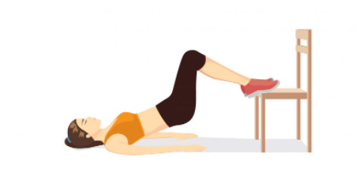
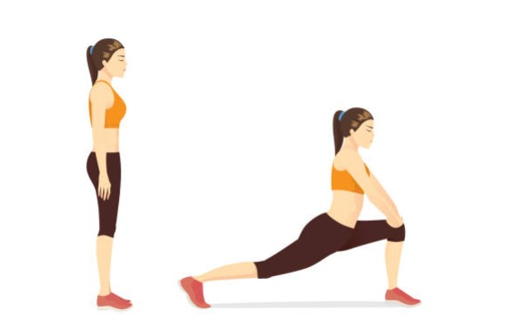
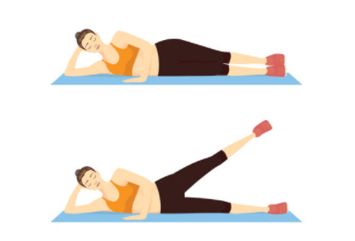

Leg Exercises
Squad Jump
- throw your Hands in the air to "load your body so that you can create power to explode upwards out of the squat. When you are at your lowest point your hands should be behind you
- After youu jump, make sure you bend your knees on the landing,too. his will help you to land safely without jarring your joints.
- A mistake is to stand up straight and don#t rush your Reps.
- Repeat it 2 Sets - 10 Reps/Set
This exercises is good for beginners.

Bulgarian Split Squats
- Stand roughly two feet in front of a sturdy bench or chair.
- Pick up your right foot and place it on the bench behind you.Your back foot is just there to help you stay balanced.
- Try to keep the load balanced evenly across your left foot as you lower downward.
- Inhale through this downward phase, then press back to standing by pushing through your left foot and using your left quad and glute to power the upward phase.
- Repeat it 2 Sets - 10 Reps/Set
A comman mistake is rising onto the toes, it will make this exercise even harder.

Single - Leg Hip Thurst
- Lie faceup with left foot resting on seat chair.
- Right leg extended toward ceiling.
- Push through left heel to drive hips off the floor.
- Pause at the top.
- Then slowly lower butt toward mat/towel.
- Repeat it 4 Sets - 8 Reps/Set
You can only do this exercise with a chair
Hip Felxor Stretches
- Stand on both legs.
- Place your leg foward and Stretch the inner part of the leg.
- Make sure you don't overbend.
- Repeat it 5 times a day to build up your stretchness
Make sure you go into yout knees and make some smooth movements .
Inner Leg Raise
- reach your top hip down so your pelvis is level
- your waist should pull away from the floor a bit
- Maintain this position as you do the movements below
- Straight-up lifts: As you exhale, lift your bottom leg, and inhale as you lower it back down without letting it touch the floor
- Repeat it 3 Sets - 15 Reps/Set
Make sure you wait a minute before you do the next set.
